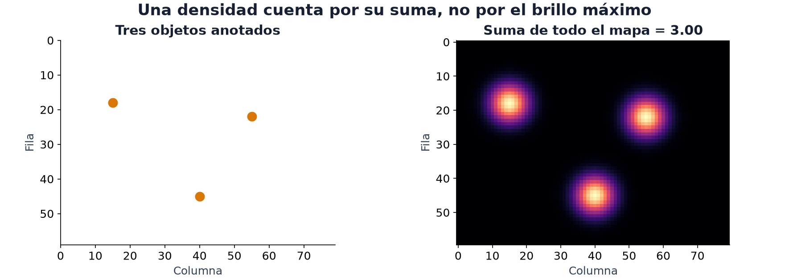
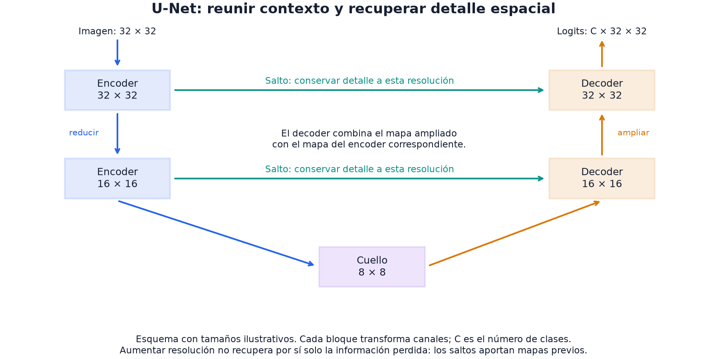

17 · Visión II
Nivel 3 — Las modalidades · Ruta de Aprendizaje
Una imagen contiene tres gallinas. ¿Quieres saber que hay gallinas, dónde está cada una o cuántas hay? La entrada es la misma; la salida necesaria cambia.
En el módulo 16, el pooling global resumía toda la imagen en un vector. Aquí necesitamos conservar ubicación o masa espacial. La forma de la respuesta es el puente entre el enunciado y la arquitectura.

Cada bulto de la figura suma una unidad; los tres juntos suman 3, aunque se solapen. Es un mapa de cantidad por píxel, no una distribución de probabilidad que deba sumar uno. Contar píxeles sobre un umbral no conserva esa cantidad. Cambiar la resolución tampoco la conserva automáticamente.
Las cuatro tareas de visión, y qué devuelve cada una
La salida guía el diseño, aunque no determina una única arquitectura:
| Tarea | Devuelve | Modelos típicos |
|---|---|---|
| Clasificación | una etiqueta por imagen | ResNet, ViT (módulo 16) |
| Detección | cajas + clase + confianza | YOLO, SSD, DETR |
| Segmentación | una etiqueta por píxel | U-Net |
| Estimación de densidad | un mapa continuo que suma la cantidad | encoder + decoder |
Los enunciados muestran por qué importa distinguir las salidas:
- Chicken Counting (2025) → densidad: mapa de 180×320 cuya suma es el número de gallinas.
- Radar (2025) → segmentación: etiquetar cada posición de un mapa de calor como persona o fondo.
- Restroom Icon Matching (2025) → ninguna de las cuatro: es retrieval (módulo 12).
Un detector podría producir un conteo, pero eso no entrega todavía el mapa que exige Chicken Counting. El objetivo verbal y el formato evaluado son dos piezas del problema.
Detección: una lista de objetos
Un detector devuelve cajas con clase y confianza. Los pesos preentrenados
permiten probar esa representación antes de adaptarla a otros objetos. Este
fragmento requiere los pesos accesibles y un tensor imagen preparado según el
contrato indicado; no incluye carga de archivos ni entrenamiento:
import torch
import torchvision
detector = torchvision.models.detection.fasterrcnn_resnet50_fpn(
weights="DEFAULT")
# imagen: tensor float32 (3, H, W) en [0, 1]; el detector transforma internamente.
detector.eval()
with torch.no_grad():
salidas = detector([imagen]) # una lista: una entrada por imagen
cajas = salidas[0]["boxes"] # (n, 4) en formato x1, y1, x2, y2
puntajes = salidas[0]["scores"] # (n,) confianza, ya ordenada
etiquetas = salidas[0]["labels"] # (n,) clase de COCOLas coordenadas (x1, y1, x2, y2) localizan cada caja en la imagen. El score
indica confianza del modelo; no mide cuánto coincide la caja con una anotación.
Ese solapamiento suele medirse con IoU: área de intersección dividida por
área de unión. Dos cajas idénticas tienen IoU 1; separadas, 0.
Este Faster R-CNN usa NMS: conserva una caja de alta confianza y suprime candidatas de la misma clase que se solapan demasiado con ella. Reduce duplicados, pero puede eliminar objetos distintos muy juntos. Ese es un posible fallo en multitudes, no una imposibilidad de todos los detectores.
Filtrar con puntajes > 0.5 es otra decisión, distinta del umbral de IoU. Su
conveniencia depende de los falsos positivos y omisiones que penalice la métrica.
Además, estas etiquetas son las de COCO: reconocer una clase nueva puede requerir
adaptación. El modelo recibe imágenes en [0, 1] y normaliza internamente;
aplicar antes el Normalize de un clasificador cambia su entrada.
Contrato de Faster R-CNN.
Segmentación: una etiqueta por píxel, y la U-Net
Segmentar es clasificar cada píxel. Un parche gris aislado puede ser fondo o parte de una persona; el contexto ayuda a decidir. U-Net amplía ese contexto reduciendo resolución en un encoder y vuelve a aumentarla en un decoder. Es una forma de combinar contexto y precisión espacial, no la única.
Las conexiones de salto llevan mapas del encoder al nivel correspondiente del decoder, preservando información local que el resumen más pequeño no conserva.

En el esquema, el encoder reduce los mapas de 32×32 a 16×16 y luego a 8×8. El decoder vuelve a ampliarlos. Las flechas verdes llevan los mapas anteriores a la etapa de igual resolución: allí se combinan con lo que viene del cuello. Ampliar un mapa pequeño por sí solo no recupera los detalles que se perdieron; los saltos aportan información que el encoder todavía conservaba.
Para C clases, una salida habitual son logits (B, C, H, W): una decisión
por posición. La entropía cruzada compara cada vector de logits con su clase
real. Si casi todo es fondo, predecir fondo puede reducir mucho la pérdida
sin resolver la región que nos interesa, aunque no sea un resultado inevitable.
Pesar clases cambia la contribución de sus errores. Otra opción es una pérdida
basada en Dice, cuyo solapamiento binario es 2·|predicción ∩ real| / (|predicción| + |real|); para entrenar se usa una versión diferenciable sobre
probabilidades, con tratamiento del caso vacío.
En Radar, la métrica da a los píxeles de objetivo un peso 50 veces mayor. Eso revela el costo relativo de los errores, pero no demuestra que pesos 1:50 en cross-entropy sean óptimos: pérdida y métrica pueden agregar y normalizar los errores de forma diferente. Es una hipótesis que comparar en validación.
Estimación de densidad: contar sin detectar
Una alternativa para objetos apiñados es predecir un mapa continuo cuya suma sea la cantidad. No exige separar las cajas de cada objeto. El decoder siguiente ilustra la salida: conserva la resolución de sus features; si estas son más pequeñas que el mapa exigido, aún falta resolver ese cambio de escala.
import torch
import torch.nn as nn
class Decodificador(nn.Module):
"""De un mapa de features a un mapa de densidad. La suma es el conteo."""
def __init__(self, canales_entrada):
super().__init__()
self.red = nn.Sequential(
nn.Conv2d(canales_entrada, 64, 3, padding=1), nn.ReLU(),
nn.Conv2d(64, 32, 3, padding=1), nn.ReLU(),
nn.Conv2d(32, 1, 1), # un canal: la densidad
nn.ReLU(), # la densidad no es negativa
)
def forward(self, features):
return self.red(features)
def conteo(mapa):
"""El conteo predicho: la suma del mapa de densidad."""
return mapa.sum(dim=(1, 2, 3))La ReLU final garantiza valores no negativos en este ejemplo. No es la única opción: una salida Softplus también es positiva, con otro comportamiento de gradientes. La representación evita NMS, pero no garantiza contar objetos ocultos ni superar a un detector; depende de los datos y de las anotaciones.
La supervisión espacial resuelve una ambigüedad del conteo. Los mapas
[3, 0, 0] y [1, 1, 1] suman lo mismo: una pérdida solo sobre el total no
puede distinguirlos. Cuando hay mapas anotados, como en Chicken Counting,
comparar el mapa enseña además dónde debe aparecer la masa. La pérdida de
mapa, la de conteo o una combinación son diseños que se contrastan con la
métrica final, no equivalencias automáticas.
CLIP: clasificar sin entrenar para esas clases
CLIP aprendió a poner imágenes y textos en el mismo espacio de embeddings. Eso permite proponer clases nuevas sin ajustar pesos para ellas: se codifican como frases y se compara con coseno.
textos = ["a photo of a cat", "a photo of a dog"]
# v_img: (n, d) embeddings de imagen · v_txt: (2, d) embeddings de texto
predicciones = (normalizar_filas(v_img) @ normalizar_filas(v_txt).T).argmax(1)El fragmento presupone vectores de los encoders de imagen y texto del mismo
CLIP y la función normalizar_filas del módulo 12. Cambiar las frases puede
cambiar el ranking; el coseno no es una probabilidad calibrada de la clase.
Eso permite clasificación zero-shot. En Pixel Efficiency (2025), CLIP era parte del evaluador: había que conservar como máximo 6.25% de los píxeles para que sus predicciones siguieran acertando la especie real. Las etiquetas sí importaban; el reto era preservar evidencia útil para ese modelo concreto.
⚠️ Las tres trampas
1. Elegir la tarea equivocada. «Contar» no siempre es detectar. Lee qué formato y significado de la salida pide el enunciado. Un mapa 180×320 puede ser una máscara o una densidad: sus dimensiones por sí solas no distinguen ambas.
2. Ocultar la clase minoritaria en un promedio. Si el 99% de los píxeles es fondo, predecir siempre fondo logra 99% de accuracy y recall cero para el objeto. Es el ejemplo del módulo 04 extendido al espacio; no implica que toda pérdida sin pesos termine en esa solución.
3. La resolución de la salida. Si redimensionaste para el modelo, hay que volver a la resolución que pide el enunciado. En densidad, además hay que conservar la suma del mapa: interpolar cambia su masa. Comprueba el conteo antes y después y corrige el factor de área o renormaliza cuando la suma sea positiva. Las máscaras de clase usan interpolación discreta; no se tratan como densidades. Un mapa en el tamaño equivocado incumple el contrato.
🏋️ Práctica
| # | Ejercicio | Fuente | Qué practica |
|---|---|---|---|
| 1 | HuggingFace CV Course: detección y segmentación | huggingface.co/learn | las dos tareas, guiadas |
| 2 | Cuenta objetos con un detector preentrenado y mide cómo falla al apiñarlos | — | ver el límite de la detección |
| 3 | ⭐⭐ Chicken Counting: decoder de densidad sobre el extractor provisto | repo oficial | la tarea central del módulo |
| 4 | ⭐ Radar: segmentación con pérdida pesada 1 vs 50 | repo oficial | contrastar una pérdida con la métrica |
| 5 | Pixel Efficiency: elegir 6.25% de los píxeles para que CLIP acierte | repo oficial | optimizar contra otro modelo |
| 6 | Segmentación multiespectral | OlimpiadaAI III | U-Net en un problema nacional |
El 4 permite explorar la conexión entre métrica y pérdida: entrena la misma U-Net con cross-entropy sin pesos y con pesos 1:50, y compara con la métrica oficial. Mide cuánto cambia en tu split; las medias históricas de Radar y Chicken pertenecen a problemas distintos y no prueban una explicación causal sobre pérdidas o arquitecturas.
🎯 Mini-desafío (formato IOAI)
Tarea: Chicken Counting (IOAI 2025, día 1), completa. Métrica:
exp(-mean(abs(1 - conteo_predicho / conteo_real))), se maximiza en 0–1; el conteo es la suma del mapa. En el evaluador oficial, ratios no finitos se sustituyen por 1 y una media mayor que 100 devuelve score 0. Referencias publicadas: baseline 0.71, Comité 0.89. Recalcula el baseline en tu split; no son automáticamente referencias de una validación propia. Datos: 100 imágenes de 720×1280 con su mapa de densidad de 180×320.El extractor de features viene congelado: solo diseñas y entrenas el decoder. Evalúa con el metrics.py oficial. El contrato usa
submission.npz, clavespred_aypred_b, y mapas finitos, no negativos de forma(100, 1, 180, 320).Una exploración útil es comparar aprender solo el conteo con aprender el mapa: ¿pueden dar conteos parecidos y ubicar la masa de manera distinta? Si usas aumentos, imagen y anotación deben transformarse juntas. Al duplicar ambos ejes de un mapa, hay cuatro veces más píxeles: la densidad por píxel debe ajustarse para conservar el total, comprobando la suma tras interpolar.
Para poner a prueba la intuición
Si duplicas la resolución de un mapa de densidad, ¿qué debe pasar con su suma?
¿Puedes acertar el conteo con un mapa espacialmente absurdo? Diseña un ejemplo.
¿Qué salida elegirías para objetos aislados, objetos amontonados y regiones extensas?